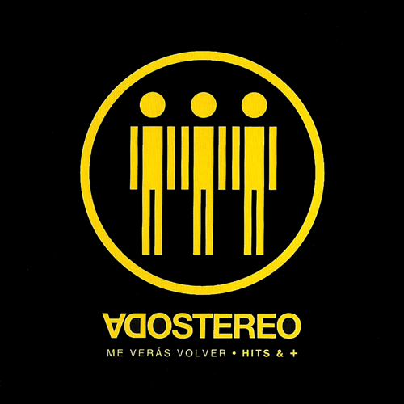
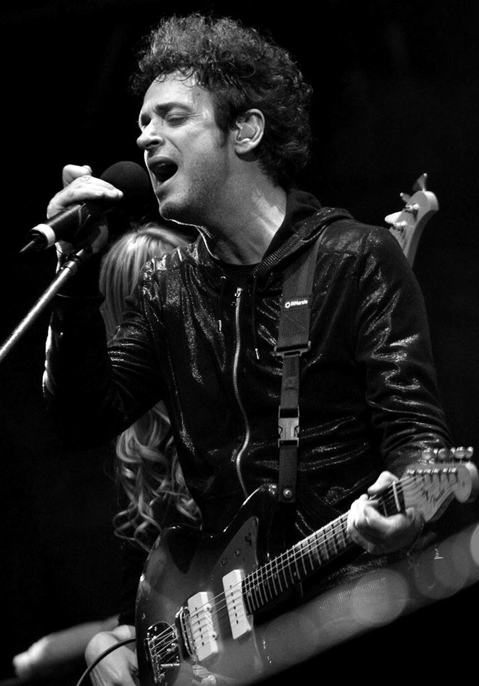

Soda Stereo
Soda Stereo fue una banda de rock argentina, formada en Buenos Aires en el año 1982 por Gustavo Cerati (voz, guitarra), Héctor «Zeta» Bosio (bajo) y Carlos Alberto Ficicchia «Charly Alberti» (batería), considerada una de las más influyentes e importantes bandas iberoamericanas de todos los tiempos y una leyenda de la música latina. La banda tuvo un papel muy importante en el desarrollo y la difusión del rock iberoamericano durante las décadas de 1980 y 1990. Fueron el primer grupo de habla hispana en conseguir un éxito masivo en Latinoamérica. Soda Stereo ha encabezado las listas de todos los tiempos en su nativa Argentina, donde se establecieron varios récords de ventas de discos y asistencias a conciertos.
Cuatro de sus álbumes han sido incluidos en la lista de los 250 mejores discos de todos los tiempos del rock iberoamericano según la revista Al borde: Canción animal (n.º 2), Comfort y música para volar (n.º 15), Signos (n.º 40) y Sueño Stereo (n.º 41). Además, la edición en inglés de Rolling Stone consideró a Sueño Stereo como el cuarto mejor álbum de la historia del rock latino. Su canción «De música ligera» ha sido considerada la segunda mejor del rock hispanoamericano y la cuarta de todos los tiempos, tanto del rock latinoamericano, como del rock argentino en particular. Las canciones «Te hacen falta vitaminas» y «Nada personal» han sido consideradas la n.º 73 y n.º 74 respectivamente entre los mejores temas del rock argentino. Los videos de «En la ciudad de la furia» y «Ella usó mi cabeza como un revólver» fueron finalistas y ganadores respectivamente del entonces único premio MTV a la música latina. El video «Cuando pase el temblor» fue nominado finalista del 12.° World Festival of Video and TV en Acapulco. En 2002 recibieron el Premio Leyenda de MTV Latinoamérica por su trayectoria musical, el primero que entregó la entidad. En sus catorce años de existencia continuada realizaron 1488 recitales en 97 ciudades de países de América y Europa. La banda vendió aproximadamente 20 millones de copias en todo el mundo.
En 1997 se disolvió por problemas personales y por diferencias de criterios artísticos entre sus integrantes, realizando una corta y emotiva gira de despedida terminada el 20 de septiembre de 1997 en el estadio de River Plate, conocido como El último concierto. A mediados de 2007 la banda anunció su regreso para realizar una única gira continental llamada Me Verás Volver en la que reunió a más de un millón de seguidores, rompiendo varios récords de asistencia y número de conciertos.
Comentarios:
Estilo musical
Influencias
Soda Stereo fue una banda particularmente exploradora de nuevos sonidos, especialmente inspirados en el afán creativo de Gustavo Cerati; y siempre buscaron que ninguno de sus discos sonara igual al anterior. Una de sus principales y más claras influencias durante toda la carrera musical del grupo, fue la que recibía permanentemente del new wave. Entre los artistas que influenciaron a Soda durante su carrera se encuentran The Smiths, Fine Young Cannibals y los trabajos en solitario de George Harrison, Paul McCartney y John Lennon; The Police, New Order, The Cure, Depeche Mode, Television, Echo & The Bunnymen, Talking Heads, Elvis Costello, David Bowie, Deep Purple, Virus, XTC, The Specials, Squeeze, Pink Floyd, Queen (como se ve en la canción tributo «Algún Día»), My Bloody Valentine y Cocteau Twins.6869 En lo que respecta a cada uno por separado, algunos de los más grandes ídolos de Cerati eran Sting (vocalista de The Police) y Luis Alberto Spinetta. Así mismo, la canción Purple Haze de Jimi Hendrix y el virtuosismo de Ritchie Blackmore fueron su motivación para dar sus primeros pasos con la guitarra eléctrica; Zeta aprendió a tocar el bajo viendo a su ídolo Paul McCartney; y Charly aprendió mucho de su padre Tito Alberti y además admiraba a Stewart Copeland, baterísta de The Police.
Años 80
En su comienzo, tenían un sonido New Wave bastante pop y fiestero, lo que se oye en su primer trabajo homónimo Soda Stereo, tributario de bandas como The Police y The Specials. Con el pasar del tiempo, el sonido new wave fue madurando y ya no era tan fiestero; además, influidos por agrupaciones como The Cure y Television, añadieron el crudo sonido post-punk. Fue así como en los discos Nada Personal y Signos convivían éxitos pop («Juego de seducción», «Persiana americana», «El rito») con canciones más oscuras («No existes», «Ecos», «Final Caja Negra»).
Hacia fines de la década, el grupo decidió cambiar el rumbo. Para ello, Gustavo Cerati contrató al experimentado músico Carlos Alomar (entre otros, durante muchos años guitarrista de David Bowie) como productor musical y fueron a vivir a New York por más de un mes para trabajar en su cuarto disco Doble Vida. Gracias a esto, añadieron al sonido new wave, influencias de la música norteamericana, especialmente del funk y del soul, junto con un sonido más pop. Aunque había excepciones, como es el caso del sonido alternativo de «En la ciudad de la furia».
Años 90
El cambio de década, también marcó un antes y un después en el estilo musical de la banda. Dejaron atrás al sonido new wave y post-punk y adoptaron un estilo mucho más basado en el protagonismo de la guitarra. Fue así como en 1990 vio la luz Canción Animal, que se convertiría también en su disco más exitoso. Y para sorpresa de muchos, el cambio más radical estaba aún por venir.
En 1992 y luego de culminar la extensa y exitosa Gira Animal, volvieron al estudio de grabación. Influenciados por el naciente movimiento alternativo en Inglaterra, la banda decide olvidarse de la masividad, la radio y los sonidos pop para dar un giro completo a su música, lanzando ese mismo año Dynamo, con un potente y oscuro sonido de shoegazing y rock alternativo.70 Además, incluyen algunas creaciones experimentales.
En 1995 y luego de casi separarse, deciden volver a sus orígenes con el que sería su último álbum de estudio, Sueño Stereo. Si bien mantenían un sonido alternativo predominante, lo hicieron más melódico y suavizado. Además, se apreciaba una notable influencia de la música electrónica. Esto se tradujo en un éxito rotundo del álbum, especialmente de hits como la alternativa «Ella usó mi cabeza como un revólver» y la alegre y pop «Zoom». También la banda se dio el tiempo de experimentar, especialmente con las últimas tres canciones del disco.
El camino que quería seguir la banda si hubiesen seguido juntos es un misterio, aunque parecía estar orientado a la música electrónica, como mostraría Gustavo Cerati en 1999 con su álbum Bocanada, el primero luego del quiebre del grupo.